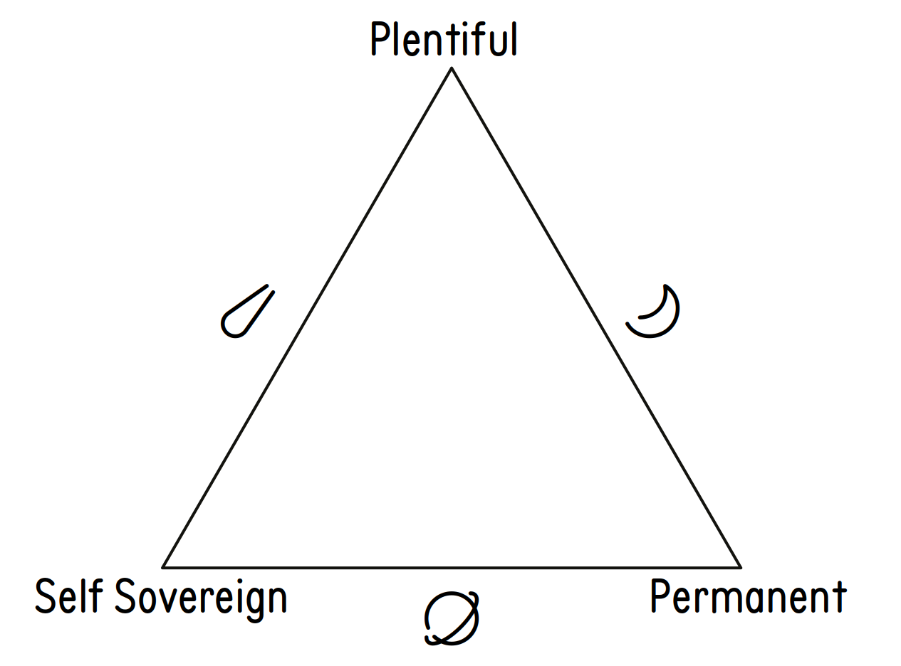

Public key infrastructures solve a coordination problem for communicators on a network. Urbit’s pki (Azimuth) is designed to provide globally consistent, permanent, and completely self-owned identities. This post explores the design choices that led to Urbit’s pki, including the trade-offs between impermanence and self-attestation, global consistency, and scalability. Urbit’s pki includes three types of names epitomizing the poles of the tradeoff trilemma.
A public key infrastructure (pki) is a system for binding a set of keys to a name. Sometimes a small amount of metadata is included. Existing pkis include pgp-style “web of trust”, ssl certificates, ZeroTier, Keybase, OpenID, Mozilla Persona, and Login with Google. These take unique approaches to the problem and have achieved some degree of success, but none provide globally consistent, permanent, and completely self-owned identities. In this article, we will describe Urbit’s approach to achieving these properties in its pki.
Urbit’s pki is named “Azimuth” (or occasionally “Urbit ID”). Azimuth is Urbit’s identity layer, built as a suite of smart contracts on the Ethereum blockchain and several apps run locally on your “ship”. (In Urbit, a “name” is often called a “ship” or an “address” because we use the metadata in the pki to make names routable.) The total data is two 256-bit asymmetric keys, a cryptographic suite number (to allow changing crypto algorithms), the revision number of the key, and the name of a ship that will route for it. This sums to less than 128 bytes of data.
Each pki trades off various properties. We chose a tripartite system so that appropriate choices can be made for different use cases. Here, we explore the various properties we chose by following a series of binary choices—the idea maze.
One way to classify pkis is by permanence: either you can change your keys or not. If you cannot, then your name is impermanent, for no one can keep a set of keys secure forever. Even if your opsec never fails, eventually your crypto algorithms may be compromised.
However, if you sacrifice the ability to change your keys, you can achieve a very nice property: self-attesting keys. If your name is a hash of your public key information, then no other source of information is required to verify you are who you say you are. This is a useful property since it requires no coordination at all. Many things are impermanent, especially during development. It also provides a way to try out the network without obtaining a permanent address.
This is our first stop in the idea maze. We call this sort of name a “comet”. A comet’s name is the 128-bit hash of its public keys.1
However, Urbit is yours and it’s forever. You shouldn’t have to change your name every time you change your keys. So, we go back and take the other choice: you must be able to change your keys.
To change keys, you must sign a message with the old keys revoking them and supplying the new ones2 . The question is what happens if the old keys also sign a second set of new keys. This could happen if an attacker obtained your old keys after the fact. This is important because one of the reasons to be able to change your keys is to invalidate the old ones so that they have no power.
We have two options again: the pki may be globally consistent or not. To be globally consistent means that if you believe a name is bound to a set of keys, then nobody on the network will disagree.
If you don’t require global consistency, you may sign this message and send it to all your neighbors, and they pass it on, and hopefully it gets to most of the network quickly. However, if one of those ships receives two contradictory versions of this message, the only thing it can do is trust the first one it heard, which may be different than what someone else heard. Thus, this is pairwise consistent but globally inconsistent. This is essentially how the pre-blockchain Ames network worked, though key changes were not actually implemented. Because global consistency is a valuable property, we looked at other options.
For a globally consistent pki that allows you to revoke keys, you need to be able to distinguish between two cryptographically valid messages to determine which was signed first. The dual problem could be solved easily — you can prove a message is signed after another by including the signature of the first in the second. This is equivalent to reading out a newspaper headline to prove a message was recorded after a given day.
However, the problem of proving one message was sent before any later ones inverts the problem. You can solve this with newspapers by placing the message in the text of the newspaper. However, while reading a newspaper requires no central party, writing one does. For a long time, this sort of message was always handled by a central party. ssl revocations are managed by a few central parties. When you buy property, it’s not sufficient to have the previous owner sign the title — this must be entered into a central land registry. Otherwise, the owner may sell their property to multiple people and there would be no way to determine who is the new owner. With the land registry, all you need to do is ask the registry which sale happened first, and that’s the one that counts.
However, Urbit is yours and it’s forever. Trusting central registries jeopardizes both. The keen reader will notice that the problem of determining which key rotation happened first is exactly the double-spend problem that Satoshi solved with his proof of work algorithm for Bitcoin. His first block famously includes a newspaper headline to prove he didn’t mine the block before that date. In a beautiful duality, his own algorithm proves that he didn’t mine it after that date.3
Some argue that blockchain is only good for money. This is myopic and is generally based on the experience that its most valuable application so far has been money. However, blockchain is a cryptographic primitive to do what was previously impossible: prove that one message was signed before another without a central party. Blockchain was discovered by someone trying to create digital money, and he needed that primitive, but that doesn’t mean that’s all it’s good for.
Thus, we store our pki data on a blockchain for our second kind of name: planets. A planet is a 32-bit address which has key information stored on the blockchain.4 The owner of a planet may broadcast new pki data by adding it to the blockchain. Any later messages by the old keys will be rejected, and everyone on the network will listen to the blockchain for key data. Thus, we have global consistency, permanence, and self sovereignty. We know of no other solution that can provide these properties.
However, while small individually, the aggregate pki data for all nodes on the network may become very large. This is not an issue for comets because nobody needs to store comet keys except for those which they’re talking with, and even those can be garbage-collected and re-requested and verified. For planets, there is a canonical set of keys, and somebody must store that. There are about 232, or 4 billion planets. If the pki data is about 100 bytes for each planet, this is about 400 GB of data. This may be more than most users wish to store, but it’s small enough that it would be very cheap for someone to host this data for many users.5
This information is currently stored directly on the Ethereum blockchain, but as is well understood in blockchain circles this approach will not scale beyond a certain point. Many chains are pursuing designs that allow the users of the smart contracts to locally store the data associated with the contracts they care about and only commit hashes to the chain. We expect there to be several viable options for this by the time Azimuth’s scaling needs exceed what’s provided by Ethereum. This will free us from the cost of hosting the pki data on all Ethereum nodes, but the data must still be stored somewhere. Any service that could handle such a large amount of data would inherently centralize the network. Azimuth and Jael make reference to an external source of truth for their own and peer’s key information, but do not otherwise depend on Ethereum for their operation.
However, 4 billion is not enough addresses for every device on the planet today, much less in a few decades. So, we apply our maxim of re-examining our choices at each level for each use case. Examining the idea maze above, we cannot use the blockchain option for everything since the data is too big. However, it’s not actually necessary for each of your devices to have its own self-sovereign identity separate from your planet. So we choose the option of using a central registry: your own planet.
We allocate 4 billion “moons” to each of those planets. A moon is a 64-bit address whose 32-bit suffix is its planet. Your planet can easily store the keys for its own moons, and anyone who needs to talk to your moons can ask you for the keys. This is the sense in which moons are true ships: they’re permanent names and you own them completely, as long as you own the planet. However, they’re not independent ships — their keys can always be revoked by their planet.

To create a sane network, we require global consistency for all our names (Figure 1 ). There are three other properties; pick any two:
Comets are impermanent, self sovereign, and plentiful.
Planets are permanent, self sovereign, and not plentiful.
Moons are permanent, not self sovereign, and plentiful.
Fancifully, comets are wayward celestial bodies that are
great for testing and miscellaneous low-value things that won’t
last for long. Planets are where you can build a home
and shape it into anything you want it to be. People
can always find your planet; it’s not going anywhere.
Moons are useful for special purposes, like storage,
heavy industry, and anything else you might want to do
off-planet.6

Gigi (2019). 21 Lessons: What I’ve Learned from Falling Down the Bitcoin Rabbit Hole. Independently published. url: https://www.amazon.com/gp/product/1697526349/ (visited on ~2024.3.7).
— (2021) “Bitcoin is Time”. url: https://dergigi.com/2021/01/14/bitcoin-is-time/ (visited on ~2024.3.7).
1We currently limit comets to “sponsors”, particular stars which are whitelisted to create them. This is a matter of policy and not inherent to the pki design.⤴
2Or the equivalent with a hierarchical key structure. In practice, you want to have a master key which signs a junior key for everyday use. You use the master key to rotate the junior key.⤴
3More strictly: it proves that he didn’t mine it after the other blocks currently on the Bitcoin blockchain. It only gives an ordering within the chain, not a literal timestamp. But cf. Gigi (2019) and particularly Gigi (2021) on Bitcoin ordering as time.⤴
4In addition to planets, there are stars and galaxies. From a pki perspective they’re treated exactly like planets, but on the network they provide infrastructure services like routing.⤴
5In practice, this will likely be an included service by your sponsoring star. It should never rise above the capital cost of a 400GB hard drive.⤴
6To extend the metaphor, stars are a neighborhood to live in—they’re easier for other planets to see, so when they want to send you a message they look for your star first. If they don’t even know where your star is, they can certainly find your star’s galaxy, and that will be enough to locate the star. Of course, if your star is not providing satisfactory service, you can take your planet and move to another star.⤴